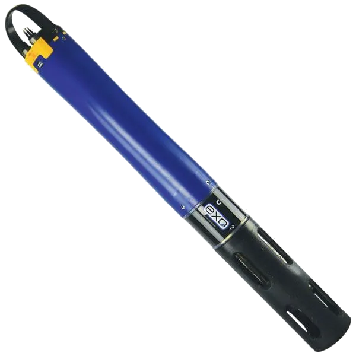

YSI EXO2 Multiparametric Probe

| YSI EXO2 Probe | |
|---|---|
| Location: | Lab. 1.87 Building 7 |
| Manager: | Margarida Ramires |
| Operator: | User |
| Working Principle: | Sensors |
| Manufacturer: | YSI Inc. (Xylem Inc.) |
| Model: | EXO2 |
| Type: | Multiparametric Probe |
| Website: | YSI (Xylem) |
The YSI EXO2 Multiparameter Water Quality Sonde is a high-precision multiparameter probe developed for monitoring water quality in freshwater, estuarine, and marine environments. Designed for field measurements and continuous monitoring, it allows the simultaneous acquisition of multiple physicochemical parameters, and is widely used in environmental studies, coastal monitoring, limnology, oceanography, and water resource management.
The system features a modular architecture with seven universal sensor ports, allowing the probe to be configured according to the needs of each sampling campaign. Depending on the installed configuration, it is possible to measure parameters such as temperature, conductivity, salinity, dissolved oxygen, pH, oxidation-reduction potential (ORP), turbidity, chlorophyll, phycocyanin, phycoerythrin, fluorescent dissolved organic matter (fDOM), nitrate, ammonium, and chloride. The sensors are automatically recognized by the probe, facilitating installation, calibration, and replacement.
The EXO2 incorporates a central automatic cleaning system (anti-fouling wiper) that removes biofilms and sediment accumulated on the sensors during prolonged campaigns, reducing maintenance needs and ensuring greater stability and reliability of measurements over time. Its construction using titanium and corrosion-resistant materials allows for use in demanding aquatic environments, including saline waters and long-term monitoring.
Communication can be carried out via Bluetooth®, RS-485 or other industrial protocols, and it is compatible with Kor™ Desktop and Kor™ Mobile software, which allow you to configure monitoring campaigns, calibrate sensors, view data in real time and export results for later analysis. Internal memory and low power consumption allow for autonomous deployments for several months, making the EXO2 suitable for continuous monitoring in fixed stations, oceanographic buoys or field campaigns.
Calendar / Availability
RequestMain Applications:
- Water quality monitorization;
- Oceanography studies;
- Aquatic ecosystems evaluation;
- Limnologic studies;
- Environmental impact evaluation;
- Field campaigns;
- Continuous monitorization in buoys and platforms;
Sample Type:
- Seawater;
- Estuarine water;
- Fresh water;
Main Advantages:
- Simultaneous readings of multiple physico-chemical parameters;
- Modular architecture with interchangable probes;
- Automatic sensor cleaning system (Central Wiper) to reduce biofouling;
- High mesurement stability and precision;
- Robust build with titanium components resistent to corrosion;
- Adequate for continuous monitorization and long duration campaigns;
- Communication via Bluetooth® and industrial interfaces;
- Internal memory for autonomous data acquisition;
- Easy configuration and calibration using the Kor™ software;
- Compatible with fresh water, estuarine water and seawater monitorization;
- High resistence to pressure, allowing for 250 m deep operations;
Probes:
| Probe | State |
|---|---|
| Temperature | Installed |
| Condutivity | Installed |
| Salinity | Installed |
| Dissolved Oxigen (Optic) | Installed |
| pH | Installed |
| ORP (Redox Potential) | Installed |
| Turbidity | Installed |
| Chlorophill-a | Installed |
| Phycocyanine | Instalado |
| Phycoerythrin | Installed |
| fDOM / CDOM | Installed |
| Nitrate (UV) | Available for purchase |
| Nitrate (ISE) | Available for purchase |
| Ammonium (ISE) | Available for purchase |
| Ammonia | Available for purchase |
| Cloride (ISE) | Available for purchase |
| Rhodamine WT | Available for purchase |
| PAR (Photosynthetic Active Radiation) | Available for purchase |
| Depth Sensor | Available for purchase |
Technical Specifications:
| Specification | Value |
|---|---|
| Manufacturer | YSI Inc. (Xylem Inc.) |
| Model | EXO2 |
| Software | Kor™ |
| Number of probe ports | 7 universal ports |
| Anti-fouling system | Automatic Central Wiper |
| Maximum depth | 250 meters |
| Internal memory | 512 MB (>1 000 000 de registries) |
| Maximum acquisition rate | Up to 4Hz |
| User calibration | Yes |